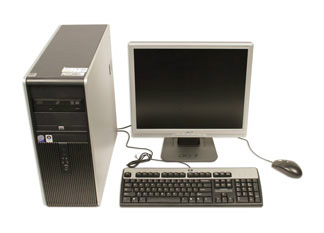

A computer is an electronic device that manipulates information, or data. It has the ability to store, retrieve, and process data. You may already know that you can use a computer to type documents, send email, play games, and browse the Web. You can also use it to edit or create spreadsheets, presentations, and even videos.

What are the different types of computers?
When most people hear the word computer, they think of a personal computer such as a desktop or laptop. However, computers come in many shapes and sizes, and they perform many different functions in our daily lives.
When you withdraw cash from an ATM, scan groceries at the store, or use a calculator, you're using a type of computer.
1.Dekstop Computer:
Many people use desktop computers at work, home, and school.
Desktop computers are designed to be placed on a desk, and they're typically made up of a few different parts, including the computer case, monitor, keyboard, and mouse.
2.Laptop Computer:
The second type of computer you may be familiar with is a laptop computer, commonly called a laptop.
Laptops are battery-powered computers that are more portable than desktops, allowing you to use them almost anywhere.
3.Tablet Computer:
Tablet computers—or tablets—are handheld computers that are even more portable than laptops.
Instead of a keyboard and mouse, tablets use a touch-sensitive screen for typing and navigation.
The iPad is an example of a tablet.
About Us
Contact Us